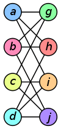
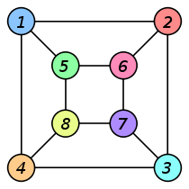

<!-- Generated template for the LerIsomorfismoComponent component -->
<div>


    <ion-card>
        <ion-card-content text-justify>
          <h2><b>Motivação</b></h2>
          
          A noção formal de "isomorfismo", por exemplo, de "isomorfismo gráfico", captura a noção informal de que alguns objetos têm "a mesma estrutura",
          mais formalmente um isomorfismo dos grafos  <ng-katex equation= "G"></ng-katex>   e  <ng-katex equation="H" ></ng-katex>  é uma bijeção entre os conjuntos de vértices de  <ng-katex equation= "G"></ng-katex>  e  <ng-katex equation="H" ></ng-katex>
          <br> <ng-katex equation= "f: V(G) \\rightarrow V(H)"></ng-katex>  
          
          
          
            
          Se um isomorfismo existe entre dois grafos, 
          então os grafos são chamados de isomorfos e nós denotamos 
          por  <ng-katex equation="G \\simeq H" ></ng-katex> ou <ng-katex equation="H \\simeq G" ></ng-katex>   
          No caso, quando a bijeção é um mapeamento de um grafo em si
           mesmo, ou seja, quando G e H
           são um e o mesmo grafo, a bijeção é chamada de automorfismo de G.
           O isomorfismo de grafos é uma relação de equivalência em
            grafos e, como tal, particiona as classes de todos os grafos
             em classes de equivalência. Um conjunto de grafos 
           isomorfos entre si é chamado de classe de isomorfismo de grafos.
        </ion-card-content>
        </ion-card>


</div>


